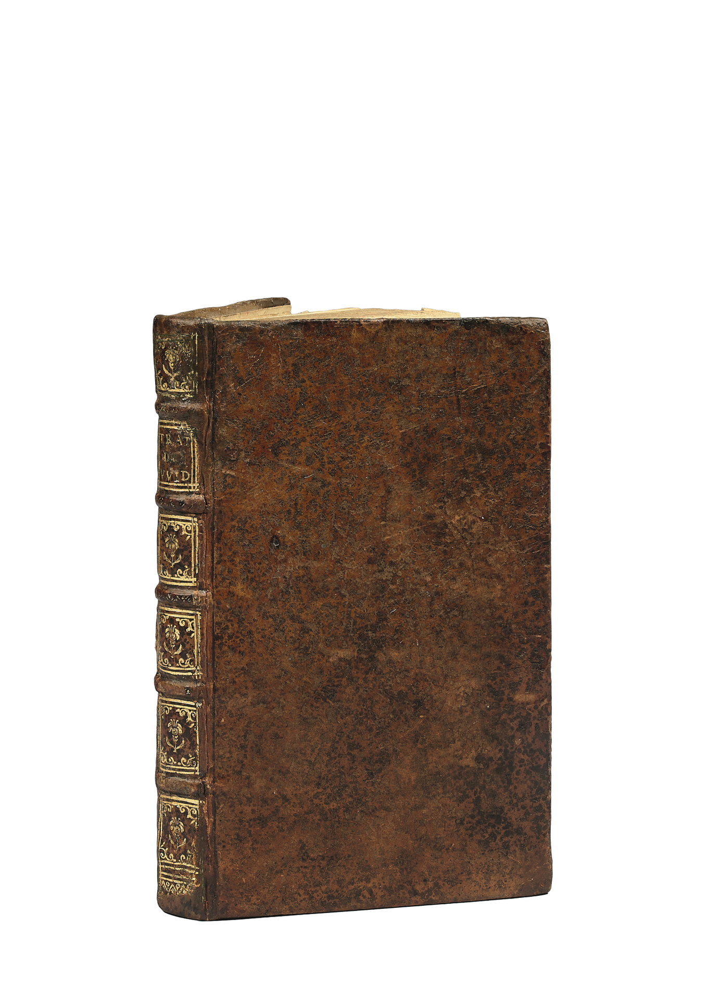
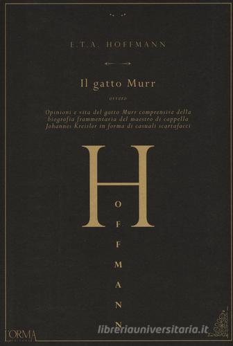
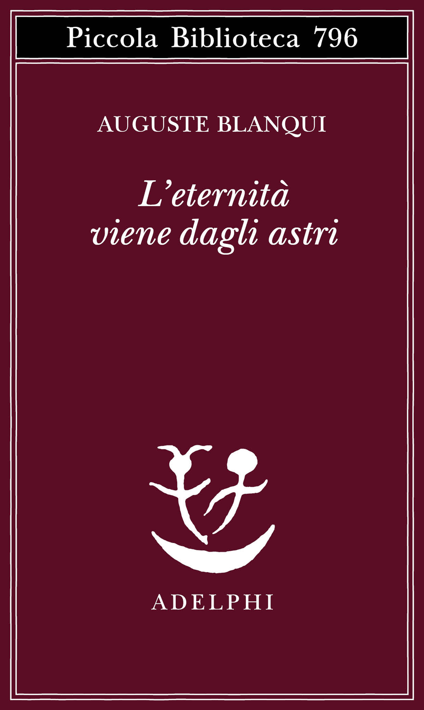
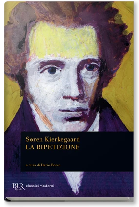
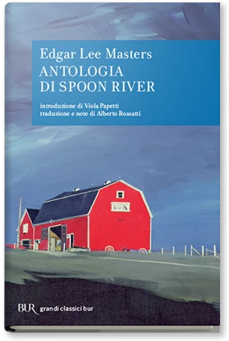
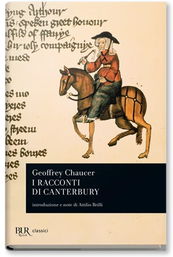

23:32 · 29 OPERE
Il dialogo della cultura
Il filo del discorso
Dr Divago presenta la cultura come un dialogo fra opere, epoche e discipline, capace di rendere visibili rapporti che un apprendimento per compartimenti tende a nascondere. La riflessione parte dall’ambiguità della parola cultura e dall’esigenza socratica di interrogare la propria vita. I Principia di Russell e Whitehead e quelli di Newton, insieme ai trattati di Archimede e Pascal, introducono una rete di relazioni scientifiche e filosofiche. Il racconto delle origini oniriche di Jekyll e Hyde e il richiamo a Freud spostano il discorso sul rapporto fra immaginazione e conoscenza. La parte centrale segue i rimandi letterari: gli Adagia, Candide, Wittgenstein e Dostoevskij, poi Hugo e soprattutto Il maestro e Margherita. Il nome di Voland e il gatto Behemoth diventano esempi di come una scelta narrativa possa richiamare tradizioni bibliche e letterarie diverse. Il relatore passa quindi al ritorno, alla ripetizione e al ricordo, accostando Nietzsche, Kierkegaard, Blanqui e il mito di Etalide. Il Discorso sulle scienze e le arti di Rousseau introduce una critica del conformismo e dell’originalità ridotta, nella sua lettura, ad appartenenza sociale. Gli ultimi esempi collegano Luciano a Spoon River, Boccaccio a Chaucer e Conrad al cinema di Coppola. La conclusione, accompagnata da Leopardi, contesta l’incapacità contemporanea di riconoscere questi nessi. È una proposta interpretativa: analogie, influenze ipotizzate e giudizi sull’istruzione e sulla società restano distinti da relazioni storiche dimostrate.
I libri nel discorso

Apologia di Socrate
Identificazione probabile
Copertina del volume Apologia di Socrate. Critone: BUR · Apologia di Socrate. Critone · a cura di Maria Michela Sassi, 1993
Copertina autentica del volume BUR contenente Apologia di Socrate e Critone. Il secondo titolo non è aggiunto come citazione del video; l’autore del testo è Platone, con Socrate come figura protagonista.
L’allusione socratica alla vita senza indagine suggerisce Apologia 38a, senza titolo pronunciato.
Passaggio 2:13 ↗ · Fonti e libro ↗
Principia Mathematica
Copertina del volume I: Cambridge University Press · copertina del volume I
Immagine autentica del volume I, titolo e autori leggibili. La voce bibliografica comprende l’opera in tre volumi, ma la fotografia non mostra un cofanetto completo. Non si assegna alla singola immagine l’ISBN dell’insieme o una ristampa non accertata.
Russell, Whitehead, Principia Mathematica e 1910 sono annunciati.
Passaggio 4:09 ↗ · Fonti e libro ↗
Philosophiae naturalis principia mathematica
Copertina: University of California Press · 2016 · traduzione Cohen e Whitman, con Julia Budenz
Copertina editoriale autentica della brossura The Principia: The Authoritative Translation, ISBN 9780520290747. Il segnaposto dell’edizione rilegata non è stato incluso nel sito. La traduzione inglese si basa sulla terza edizione latina, 1726; l’opera fu pubblicata originariamente nel 1687.
Il titolo dell’opera di Newton e 1687 sono riconoscibili.
Passaggio 4:21 ↗ · Fonti e libro ↗
Sui galleggianti
Copertina della raccolta The Works of Archimedes: Dover · The Works of Archimedes, a cura di T. L. Heath, 2002
Copertina ufficiale della raccolta Dover nella versione di T. L. Heath. Sui galleggianti è un’opera interna in due libri; gli altri trattati della raccolta non vengono dedotti come citazioni del video.
Archimede e il trattato Sui galleggianti sono espliciti.
Passaggio 4:42 ↗ · Fonti e libro ↗
Traité de l’équilibre des liqueurs
Fotografia della legatura del volume del 1663: Paris, Guillaume Desprez · Traitez, 1663 · legatura dell’esemplare
Foto autentica della legatura in vitello dell’esemplare catalogato da Camille Sourget, non copertina moderna né frontespizio. Le due opere condividono il volume e l’immagine; il titolo abbreviato sul dorso non equivale al titolo completo dei due trattati. Provenienza ed edizione sono riscontrate nel catalogo e nel CCFr.
È nominato il trattato di Pascal sull’equilibrio dei liquidi.
Passaggio 4:47 ↗ · Fonti e libro ↗Traité de la pesanteur de la masse de l’air
Fotografia della legatura del volume del 1663: Paris, Guillaume Desprez · Traitez, 1663 · legatura dell’esemplare
Foto autentica della legatura in vitello dell’esemplare catalogato da Camille Sourget, non copertina moderna né frontespizio. Le due opere condividono il volume e l’immagine; il titolo abbreviato sul dorso non equivale al titolo completo dei due trattati. Provenienza ed edizione sono riscontrate nel catalogo e nel CCFr.
Segue il trattato sulla pesantezza della massa dell’aria, distinto da quello sui liquidi.
Passaggio 4:51 ↗ · Fonti e libro ↗
Lo strano caso del dottor Jekyll e del signor Hyde
Copertina: BUR / Rizzoli · 2021
Immagine autentica dell’opera, controllata visivamente; l’edizione di riferimento non è attribuita al filmato.
Il titolo e Stevenson sono riconoscibili nel racconto attribuito a Borges.
Passaggio 7:27 ↗ · Fonti e libro ↗
L’interpretazione dei sogni
Copertina: Bollati Boringhieri · 2019
Copertina autentica dell’edizione di riferimento, controllata visivamente. Non identifica l’esemplare letto o citato nel video.
Freud e Die Traumdeutung sono espliciti.
Passaggio 8:05 ↗ · Fonti e libro ↗
Candido o l’ottimismo
Copertina: Feltrinelli · Universale Economica I Classici · 2013 · traduzione di Stella Gargantini
Immagine autentica dell’opera, controllata visivamente; l’edizione di riferimento non è attribuita al filmato.
Voltaire e Candide sono annunciati.
Passaggio 9:07 ↗ · Fonti e libro ↗
Adagia (Adagi)
Copertina: Bompiani · 2013
Immagine autentica dell’opera, controllata visivamente; l’edizione di riferimento non è attribuita al filmato.
Sono nominati gli adagi di Erasmo.
Passaggio 9:13 ↗ · Fonti e libro ↗
Quaderni 1914–1916
Copertina del volume che contiene i Quaderni: Einaudi · Tractatus logico-philosophicus e Quaderni 1914–1916, 2009
Copertina autentica già presente nel repertorio e ricontrollata visivamente: Einaudi 2009, a cura di Amedeo G. Conte. L’ISBN è del volume contenitore; Tractatus e Quaderni restano testi distinti.
Il relatore nomina i taccuini di Wittgenstein e la frase sul suicidio, riscontrata nei Quaderni al 10 gennaio 1917.
Passaggio 9:14 ↗ · Fonti e libro ↗
I fratelli Karamazov
Identificazione probabile
Copertina: Newton Compton · I Mammut Gold · edizione di riferimento
Il motivo di tutto è permesso suggerisce I fratelli Karamazov; nel parlato è associato a Raskolnikov. La frase esatta e il personaggio non sono confermati, titolo non annunciato.
Passaggio 9:36 ↗ · Fonti e libro ↗
I miserabili
Copertina: BUR / Rizzoli · 1998
Immagine autentica dell’opera, controllata visivamente; l’edizione di riferimento non è attribuita al filmato.
Titolo francese, Hugo e furto del pane sono riconoscibili.
Passaggio 10:04 ↗ · Fonti e libro ↗
Il maestro e Margherita
Copertina: BUR / Rizzoli · 2018
Immagine autentica dell’opera, controllata visivamente; l’edizione di riferimento non è attribuita al filmato.
Il maestro e Margherita e Bulgakov sono nominati.
Passaggio 10:17 ↗ · Fonti e libro ↗
Faust
Copertina: BUR / Rizzoli · 2005
Immagine autentica dell’opera, controllata visivamente; l’edizione di riferimento non è attribuita al filmato.
Il nome Voland viene collegato esplicitamente al Faust di Goethe.
Passaggio 10:54 ↗ · Fonti e libro ↗
Bibbia
Copertina: San Paolo, 2014 · Nuova Versione dai Testi Antichi · edizione di riferimento
Behemoth e il libro di Giobbe sono annunciati.
Passaggio 11:41 ↗ · Fonti e libro ↗
Alice nel paese delle meraviglie
Copertina: BUR / Rizzoli · 2012
Immagine autentica dell’opera, controllata visivamente; l’edizione di riferimento non è attribuita al filmato.
Il titolo Alice nel paese delle meraviglie è citato in un’ipotesi sul gatto di Bulgakov, non come influenza dimostrata.
Passaggio 12:38 ↗ · Fonti e libro ↗
Il drago
Copertina: Einaudi · Collezione di teatro 104
Copertina autentica controllata visivamente. Edizione di riferimento, non identificata come quella usata nel video.
La commedia Il drago di Evgenij Schwarz è richiamata ipoteticamente.
Passaggio 12:45 ↗ · Fonti e libro ↗
Il gatto Murr
Copertina: L’orma · Hoffmanniana, 2016 · a cura di Matteo Galli
Immagine autentica dell’opera, controllata visivamente; l’edizione di riferimento non è attribuita al filmato.
Il gatto Murr e Hoffmann sono riconoscibili.
Passaggio 12:48 ↗ · Fonti e libro ↗
L’éternité par les astres (L’eternità viene dagli astri)
Copertina: Adelphi · 2023
Immagine autentica dell’opera, controllata visivamente; l’edizione di riferimento non è attribuita al filmato.
Blanqui e L’éternité par les astres sono riconoscibili, con deformazioni ASR.
Passaggio 14:15 ↗ · Fonti e libro ↗
La ripetizione (La ripresa)
Identificazione probabile
Copertina: BUR / Rizzoli · 1996
Immagine autentica dell’opera, controllata visivamente; l’edizione di riferimento non è attribuita al filmato.
Il tema e le frasi attribuite a Kierkegaard suggeriscono La ripetizione; il titolo non è annunciato come libro.
Passaggio 14:32 ↗ · Fonti e libro ↗
Discorso sulle scienze e le arti
Copertina della raccolta Discorsi: BUR · Discorsi, 2007
Copertina autentica del volume BUR Discorsi, che contiene il Discorso sulle scienze e le arti e il Discorso sulla disuguaglianza. L’ISBN riguarda il volume contenitore; il secondo testo non viene aggiunto come citazione di questo filmato.
Rousseau, il Discorso sulle scienze e le arti, 1750 e il quesito di Digione sono espliciti.
Passaggio 16:45 ↗ · Fonti e libro ↗
Iliade
Copertina: Einaudi · ET Classici · 2014
Copertina autentica dell’edizione di riferimento, controllata visivamente. Non identifica l’esemplare letto o citato nel video.
L’Iliade è annunciata come esempio dell’epos greco.
Passaggio 19:19 ↗ · Fonti e libro ↗
Dialoghi dei morti
Copertina: Aurora Boreale · 2024 · introduzione di Nicola Bizzi
Immagine autentica dell’opera, controllata visivamente; l’edizione di riferimento non è attribuita al filmato.
Dialoghi dei morti e Luciano di Samosata sono annunciati.
Passaggio 19:46 ↗ · Fonti e libro ↗
Antologia di Spoon River
Copertina: BUR / Rizzoli · 1986
Immagine autentica dell’opera, controllata visivamente; l’edizione di riferimento non è attribuita al filmato.
Antologia di Spoon River, Masters e 1915 sono riconoscibili.
Passaggio 19:50 ↗ · Fonti e libro ↗
Decameron
Copertina: BUR / Rizzoli · 2013
Immagine autentica dell’opera, controllata visivamente; l’edizione di riferimento non è attribuita al filmato.
Il Decameron è nominato nel confronto con Chaucer.
Passaggio 20:04 ↗ · Fonti e libro ↗
I racconti di Canterbury
Copertina: BUR / Rizzoli · 1978
Immagine autentica dell’opera, controllata visivamente; l’edizione di riferimento non è attribuita al filmato.
I racconti di Canterbury e Chaucer sono riconoscibili.
Passaggio 20:06 ↗ · Fonti e libro ↗
Cuore di tenebra
Copertina: Bompiani · I Classici · 2026 · traduzione di Mario Curreli
Immagine autentica dell’opera, controllata visivamente; l’edizione di riferimento non è attribuita al filmato.
Cuore di tenebra e Joseph Conrad sono citati insieme al film Apocalypse Now.
Passaggio 20:57 ↗ · Fonti e libro ↗
La ginestra, o fiore del deserto
Identificazione probabile
Copertina dei Canti che contengono La ginestra: Feltrinelli · Canti, a cura di Ugo Dotti, 2016
Copertina autentica dei Canti Feltrinelli, già verificata nel repertorio e nuovamente ispezionata. La voce riguarda il componimento La ginestra; l’ISBN appartiene alla raccolta, non a una sua edizione autonoma.
Leopardi e i versi sul secolo superbo e sciocco rendono probabile La ginestra; titolo non annunciato.
Passaggio 22:50 ↗ · Fonti e libro ↗Minutaggi ricavati da testi automatici, da riascoltare. Le identificazioni probabili sono segnalate accanto ai libri.